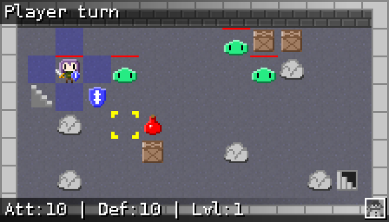

2015/08/23 22:34:37
Today, I finished laying out the first map of the first major dungeon in the Empyrean campaign. The area it is a part of is tentatively named Lochport Tower, but there's a good chance that will change.

The center area is vertically symmetrical, and the outer ring is horizontally symmetrical. Both combined create a shape that I really like. From a gameplay perspective, the player will travel clockwise around the outer ring. At 3 o'clock, there will be a mini-boss defending some treasure chests. One of the chests will contain a key that will unlock the door to the next level in the center area.
2015/08/19 16:25:12
I made some changes to this site today, mostly related to the navigation. In my first blog post I described the system of Markdown + bash scripts that I use to generate the pages here. I've made it so that the navigation now gets automatically populated with all static pages, the main blog page, and the last five blog entries. The navigation is applied to each page in the following way:
- Start with the first half of the header template
- Generate the list of links for the navigation
- Use sed to find the first line containing the current page's filename (i.e. the link to the current page in the navigation)
- Use that line number with sed to insert a class attribute to the link. This allows giving the link current page its own background color in the navigation
- Append the second half of the header, the page contents, and the footer (in that order)
Points 3 and 4 are pretty neat in my opinion. The only options to get this effect would be to either:
- Use unique CSS classes for each page. Not ideal for how I'm generating pages.
- Or use Javascript. This is a Javascript-free site, so that's a no-go.
In other news, Flare engine is at a state I'm happy calling version 1.0. The primary task now is to work on the Empyrean campaign, which is the replacement for the alpha demo game the was bundled with version 0.19. Development of the Empyrean campaign has been slow. While part of this is due to my own laziness, a good portion of the blame lies in the fact that game design is hard. Most of the gameplay values (stats, items) from the alpha demo have been thrown out. Getting things reasonably balanced is a tall order, and I feel like I'm just now getting close to a fair level of difficulty after much iteration. While I've been steadily developing maps to test content on, I look forward to going full speed into map and quest creation.
2015/03/10 15:38:09
Things have been interesting for the passed few weeks. The majority of my programming activity outside of FLARE boils down to personal pet projects. Sure, I distribute the source code under free licenses, but I never actually intend for other people to use any of my stuff.
Freeblocks

Freeblocks is one of those projects. I hacked it together for the One Game A Month game jam in January of 2013. At the time, I had a little bit of game dev experience under my belt from my contributions on FLARE. Looking back, however, I can see that I was still very inexperienced. So as with most pet projects, I put it on the shelf and left it there.
Fast-forward 2 years to February of this year, and I receive a pull request for a port to the GCW-Zero by Github user cxong. The port was rough at first, but cxong and myself have spent the past month and a half improving the game. The improvements didn't stop at getting the GCW-Zero port working either. Some other milestones include a separate "jewels" game mode, control re-mapping support, and inclusion in the FreeBSD ports collection. At this time, version 0.5 is the current released version.
SpaceFM
Last June, I wanted to implement video thumbnails into the SpaceFM file manager. So I did just that. However, IgnorantGuru had announced his hiatus a few months before, so it looked like SpaceFM would go unmaintained. I kept my changes on my own fork as a result. IgnorantGuru has since returned and contacted my about my video thumbnail code. I'm happy to say that it's upstream now and on it's way into SpaceFM 1.0!
Dunst
Dunst is a super lightweight notification daemon I found. I started tinkering with it, since I wanted to add the ability to activate the default action by middle-clicking on a notification. In the process, I discovered a handful of memory leaks that I patched and got sent upstream. It's not much, but it still feels good to have more contributions in the things-that-aren't-mine bin.
FLARE
All this work on other projects has stolen some of my attention from FLARE recently. That isn't to say it's been completely neglected. On the engine side, a lot of small bugs have been fixed, including a nasty crash related to using both transformations and summons. In addition, Igor has put together the MapSaver API, which can be used in external programs that want to use FLARE's data structures for outputting maps. The Random Map Generator is an example use of this. There are a few things I have on my mind that I want to implement before going to 1.0, but the engine is in a really good state now.
As for the actual game part, development of the Empyrean campaign has been slow. I was last working on "area 2", which contains three maps: a swamp area, a graveyard, and a ruined town as the entrance to the first dungeon. I'm happy with the swamp map that I created (see below). However, the graveyard map is not looking good to me as of now. I need to spend more time experimenting with it.

The Empyrean campaign is going to require some rethinking in terms of gameplay. Things like the types of powers available to the player, power cooldowns, the amount of stat points per level, etc. I've been brainstorming ideas about all of these, and I'll probably start experimenting once the maps for the first dungeon are complete. That will be a good vertical slice to test things with.
When the engine and Empyrean campaign stuff starts coming together, I'd like to put together another FLARE developer log, since it's been quite a while since the last one. The reason I'm putting it off until more Empyrean stuff is complete is because I want some new stuff to show when demoing the engine features. Sure, I could show most things with the existing alpha_demo mod, but it's more exciting to see something new.
Now I just need to pull myself away from maintaining Freeblocks and playing Torchlight II.
2014/12/09 10:02:52

This past weekend, I participated in my first Ludum Dare. In preparation, I had put together a simple framework of an engine using SDL 2. The framework provided simple things, like easily loading and using static images, animations, and sounds. The jam itself was quite a challenge, but it was also a lot of fun.
The game, entitled "Noman's Dungeon", is up here on the Ludum Dare website. I've also put together a time-lapse video of the entire development process, which you can watch here on Youtube. What I'd like to do now is give a postmortem on how the whole thing went.
I initially spent the first hour brainstorming ideas that fit with the "entire game on one screen" theme. After tossing around some ideas like a 1v1 tank battle game and a puzzle/platformer like Solomon's Key, I settled on a turn-based rogue-like. I had thought of such a game in the past, so this felt like a good opportunity to try it out. Here is the outline I ended up with:
- super-simple turn based rpg, srpg combat like Disgaea
- rogue-like; get "orb" at the end and return to the surface; permadeath;
- some rooms have enemies, some have treasures; only 1 room at a time (keep it on one screen)
- make battles tough, but give the option to run. Running means that you'll need to fight a stronger version of the enemy on the way back
- Items: swords (high dmg, low range), bows (low dmg, high range), armor, health potions; start with basic sword and bow
- Enemies: slimes (low range, high damage), archer skeleton (high range, low damage), goblin boss (high range, high damage)
- some tiles are trapped. Can be both positive and negative (hp restore, spike trap that does damage)
This outline felt doable in the 48 competition time frame. So how did it go?
What went right
- The art style. The comments I have received so far have been very positive about the artwork. I had not decided on the art style until around the end of the first day. At that point, I was feeling ready to start replacing the placeholder art. I had remembered a bullet point from the great Juice it or lose it talk: add eyes to things. I added some eyes to the slime monster, and everything snowballed from there.
- The turn-based system came out to be what I had originally envisioned.
- I succeeded in creating the win goal. The progression worked well: fight your way to the last floor, get the treasure, fight your way back to the top. The fight back to the top spawns more enemies than on the way down for increased challenge.
- I believe I stuck to the theme well enough. Even though the player is moving through randomly generated rooms, all of them are ultimately the same rectangular room.
- Something that almost didn't make it in time were the rocks and crates that litter each room. They add a much needed variety to each level.
- Using the framework I had already created saved a lot of potential headaches (with a few exceptions I'll explain later).
- My work pace throughout the weekend was pretty much on point. Where this was my first Ludum Dare, I was worried I wouldn't have a functional game by the end.
- The game's actually a little fun. Can't ask for much more than that.
What went wrong
- While my framework saved me some time, there were a few bugs that popped up. Most notably was that my image reference counts were incorrect when used in animations. I actually needed to fix that one twice, since my initial fix wasn't complete. Fixing those bugs ate more time than I should have spent on such things.
- The game is too easy, so there's no benefit to running. The game was initially way too difficult, but I over-corrected in the opposite direction. I simply didn't have enough time to play with balancing the combat numbers. However, it's possible that making the game easy was the right choice, since it meant more people could see the whole game. To me, that's better than the players dying a bunch and getting frustrated.
- No enemy variety. Although they have slightly randomized stats, it is just slimes for the whole game. That's only 1/3 of the enemy types I had originally planned.
- No bows. It would have been nice to have an alternative attack method, perhaps with finite ammunition.
- While not very important, there were no traps. That would have been something interesting for the player to encounter and would have added variety.
- I feel that having the player (and slimes) only move 1 tile per turn doesn't provide a lot of tactical options.
- I could only provide Linux and Windows builds. Although it should be relatively easy to build on Mac OS X, it would have been nice to be able to provide a pre-built package for those people. Something I'd like to do in the future (not for a game jam) is create a web version of the game, so anyone with a modern web browser could play. I've never done any HTML canvas and Javascript in the context of a game, so I'll probably be looking at Clint Bellanger's Heroine Dusk as a way of learning.
- While not something that's important in the context of a game jam, some of my code's structure is a bit poor. I ended up putting a lot of the game's logic in the MapEngine class, where it didn't really belong. Sorting out that structure is something I want to do before working on a port to another language.
- During the process, I wanted to make it so that entities "tweened" when moving between positions, but my movement system made that too difficult to implement in a reasonable amount of time.
So where do I go from here? I have a fun little game that's begging for some balancing and some more content. A lot of the things myself and others found to be problems with the game are simply results of having a limited amount of time. I think it's something that I want to continue working on, even though the jam is over. Maybe it will turn into something really cool one day.
2014/10/10 14:53:17
The past month or so has been pretty good for Flare development. Many crashes, memory leaks, and bugs were reported and fixed. Many of the bugs revolved around poor handling of items, which was causing items to disappear in some cases. The crashes were mostly just us not respecting array bounds, and were introduced fairly recently. The memory leaks, on the other hand, turned out to be long-standing problems. Who knew that every instance of WidgetLabel (most places where there is text) was leaking memory?
The other major memory leak was known for a long time, so I feel like going into a bit of detail. Map events have the ability to cast powers (e.g. the trapped chests in the Brothers' Lair). In order to cast these powers, we were creating a StatBlock that was attached to the event. The problem was that the event could be deleted while the power was still active, resulting in the StatBlock leaking. The solution was to determine ahead of time which events will need StatBlocks, and allocate them in an array attached to the Map class itself.
It hasn't all been scrambling to fix stuff, though. We've also had time to work on some new features. The loot system got a bit of reworking, so it is now possible to define loot tables in separate files instead of having to define loot inline. This is handy because we can re-use loot tables in multiple places. The best part is that we can mix these loot files with inline loot definitions to add lots of variety.
Also related to loot, we've added the ability for powers to drop loot. One of the more interesting ideas that was tossed around was the idea of a thief class that can punch the gold out of enemies. Clint also pointed out that powers that require an item and drop a different item is a simple version of crafting.
Igor has been very helpful in continuing work on the Android port. A lot of the work here involved re-thinking input to work with touchscreens. Many things we take for granted when using a mouse, like hovering over icons to see tooltips, had to be changed. Our solution for that case was to display tooltips on the first tap, followed by the regular "left-click" action on the second tap. During this whole process, we were even able to improve some things on the mouse/keyboard side of things, like being able to pick a target for some powers after activating from the action bar.
Finally, we merged the SDL hardware renderer from flare-engine-next into upstream flare-engine. Aside from one minor issue, it looks identical to the software renderer. Of course, it is much faster than the software renderer because GPUs are just better equipped for handling graphics (go figure). Since this feature is upstream now, I hard reset the flare-engine-next repo to upstream, so please update your forks and local clones appropriately.